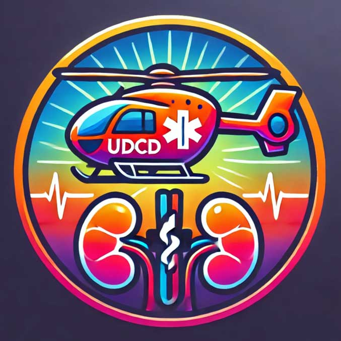

uDCD - A Feasibility Study of Uncontrolled Donation After Circulatory Death
Eligibility
Local study conflicts
- There are no co-enrollment conflicts for this study
Inclusion Criteria:
- 18-59 years old
- witnessed non-traumatic* out-of-hospital cardiac arrest (OHCA)
- resuscitation attempt started by EEAST or HEMS <15 minutes of 999-call
- co-response by EEAST and HEMS
- mechanical CPR with LUCAS device
- endotracheal intubation
- no clear reason to cease resuscitation (a valid ‘do not attempt resuscitation’ order, patient receiving end-of-life care)
- no suspicious circumstances (where forensic considerations outweigh organ rescue benefit)
- estimated to arrive at CUH ≤90-minutes of 999-call; however, this is not an absolute in inclusion criterion.
Exclusion Criteria:
- known or apparent pregnancy*
- known cancer (active treatment or end-of-life)
- traumatic injury**
- current serious infectious disease
- parenteral drugs as a cause of the OHCA
- prisoners
- those who have ‘opted-out’ of organ donation
* Patients will have a urinary pregnancy test on arrival in ED if possible, or blood HCG (PREGNANCY) levels on first blood sampling / admission bloods. Pregnancy may not be apparent until later in the pathway but will always be known prior to organ retrieval.
** Drowning and asphyxiation (hanging) are not exclusions. However, any other significant traumatic injury risk to torso and pelvis is an exclusion.
Step by Step Guide to Recruitment:
A communication cascade into the ED will be initiated by the uDCD Team, who will have been notified by the ambulance service.
If EPIC and/or NIC of Resus receive a call informing them of in-bound patient -
In standard working hours; 9-5
- Please contact the ED Research Team when eligible patients arrive in ED:
Send the ED Research Team a message via Epic chat "ED research Team" or phone 217907
At all times of the day:
Actions on receipt of pre-alert from prehospital team
- Identify a suitable resuscitation space: Resus 1,2,3,6,7, or if not available a RAT bay.
- DO NOT pre-register as an unknown patient (register the patient on arrival).
- Put LUCAS compression device in resus bay*
- Setup the resus bay for receipt of a patient in medical cardiac arrest.
- Place an ED ultrasound machine in the bay (and plug in to mains power).
- Set up, and allocate a team member, for insertion and transduction of a brachial arterial line (and ABG sampling).
- Allocate a trained member of staff to chaperone patient’s relative.
- Notify ED radiographers that portable Xray will be required
- Obtain per patient pack from magazine rack in ambulance bay:

* if a LUCAS is not available in ED then ask ED Porters to collect one (Resus Store Cupboard Level 3).
Actions on patient arrival
At all times high-quality resuscitation takes priority over trial procedures
- Continue high-quality resuscitation as per normal clinical practice / ALS.
- Confirm time of 999-call (or start of witnessed OHCA) with EMS/HEMS personnel. (It must be at this point less than 110 minutes, or 1 hr 50 minutes, since 999 call or onset of OHCA to proceed into the trial).
- Utilise EMS/HEMS personnel as required.
- Insert and transduce a brachial (or upper limb) arterial line. If HEMS have inserted an arterial line (femoral, brachial, or other site) then this can be used instead.
- Obtain an arterial blood gas (ABG) from all patients (run in the ED Resus machine). Female patients require a B-HCG (PREGNANCY) sample to be obtained – this can be either arterial or venous blood.
- Request an ED portable CXR (required after NRP balloon inflation to check position). Ask radiographer to place plate, check tube, and check screen.
- The role for the Emergency Nurses is to complete the right-hand side of the ED checklist (patient details and timings) – in the patient pack. The resuscitation team leader and the on-call transplant trial consultant will complete the left-hand side (checklist).
- If on arrival the patient is actually unknown and has no family with them, discuss with trial consultant. Most likely the patient cannot be enrolled.
Further actions if patient does not have a return of spontaneous circulation
- If considering stopping resuscitation then complete a checklist in conjunction with the uDCD trial consultant (who will be in ED) before speaking with the family member/NOK (if present), Annex A.
- Review the plan (next page) for your discussion with the patient’s family.
- Ensure that ED Radiology are ready to obtain a CXR without delay (after verbal assent obtained).
- If criteria are met but there are no family members / NOK present, then the trial consultant in ED will advise on next steps (ethical review allows for cannulation without third-party assent in some circumstances).
- If criteria are met, and resuscitation will be stopped ≤110-minutes since the onset of OHCA, then use the following script to communicate with the patient’s family member / NOK.
Scripts for family discussion
You can use your own words for this part: “Although we have been attempting to resuscitate [name] for almost 2 hours [name] has not responded and the team feel we should stop”.
This part should be verbatim (per protocol): “I would like to speak with you about something else important - after we have stopped, we would like to perform a small procedure to keep open the option of organ donation for [name]. We would like to make a small cut in the groin to place some tubes into the blood vessels at the top of the leg to preserve [name]’s liver and kidneys. This will take about 5 minutes and then you can come back in to be with [name]. If you decide later that [name] wouldn’t want to be a donor, or if you or your family don’t want to proceed, we can stop the preservation at any time and remove the tubes.”
If the patient’s family member / NOK gives verbal assent for NRP
- Ensure that either an arterial pressure is being transduced on the monitor or that a suitably experienced clinician is ready to provide continuous cardiac POCUS views (or both).
- Ensure radiographer is ready for a portable chest x-ray (to check NRP balloon position).
- Stop resuscitation attempt (as per normal clinical practice), and note in the paper form on the next page of this guide.
- Observe arterial line waveform and/or cardiac ultrasound to ensure no evidence of cardiac activity for five minutes (continuously), and document the end of this period in the paper form.
- The NRP consultant will then start a surgical procedure in the patient’s groin to commence NRP, followed by flow a few minutes later (note these timings too).
The following times should be recorded accurately:
- 999-call time,
- CUH ED arrival,
- Stop resuscitation,
- Recognition of death (end of five-minute ‘hands-off’ period),
- Start NRP surgical procedure,
- Start of NRP flow,
- Pt leaves CUH ED.
There is space on the checklist sheet (image again below) to record these contemporaneously. The information recorded on this sheet should be used to complete the .UDCD SmartPhrase in Epic, and the paper form placed in the Research post-box in ED Reception.
Once NRP has started
- the patient will be cared for by the trial team (trial consultant, specialist nurse for organ donation, perfusionist), and the patient will be transferred from ED as soon as possible. Whilst still in the ED, a local member of staff (any healthcare worker) should provide support to the trial team as required.
- Please place ALL paperwork in the post box in Reception

Support available:
- Mr. Dominic Summers (Chief Investigator, transplant surgeon)
- Dr. Ed Barnard (Co-Investigator, emergency physician)
Their phone numbers can be found in the sharepoint version of this aide memoire:
click here to viewLinks for further information:
Links to local training:
Link to the CUH ED training video:in the ED Research SharePoint (you'll need to log in with your Trust email account credentials)
Alternative external link to the same video:
Start the slideshow and the presentation will auto-play with narration (sound) to the end.